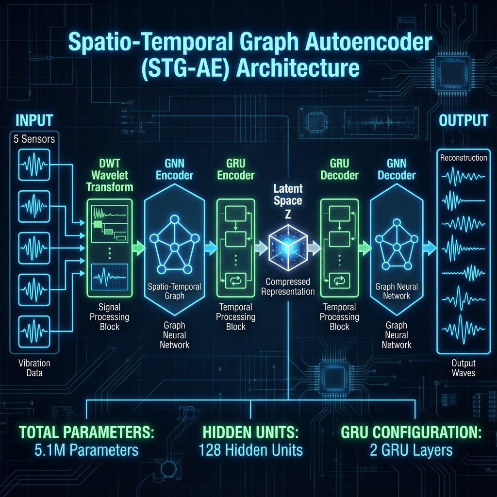
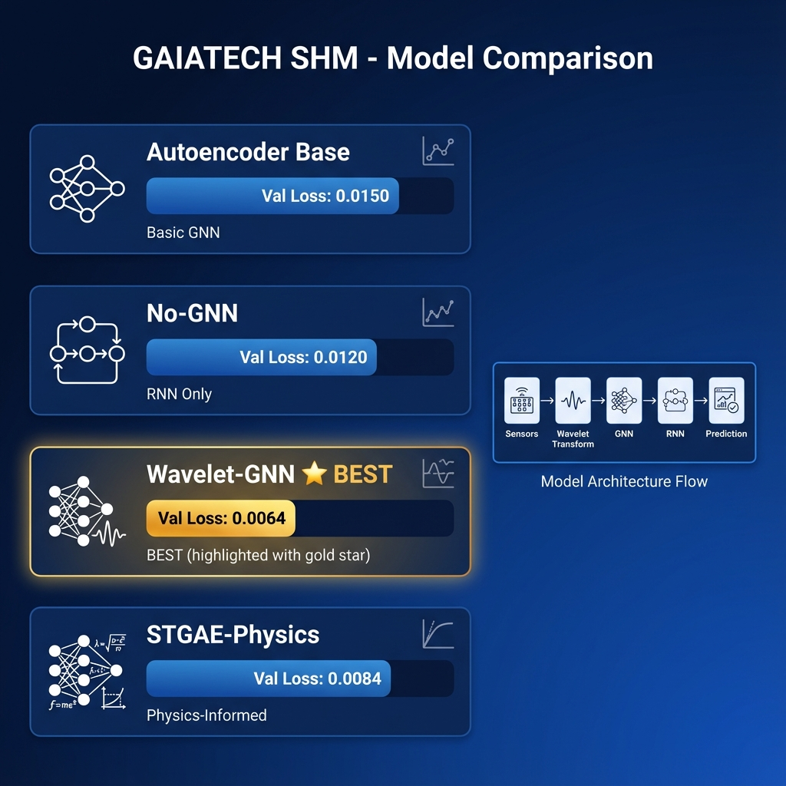
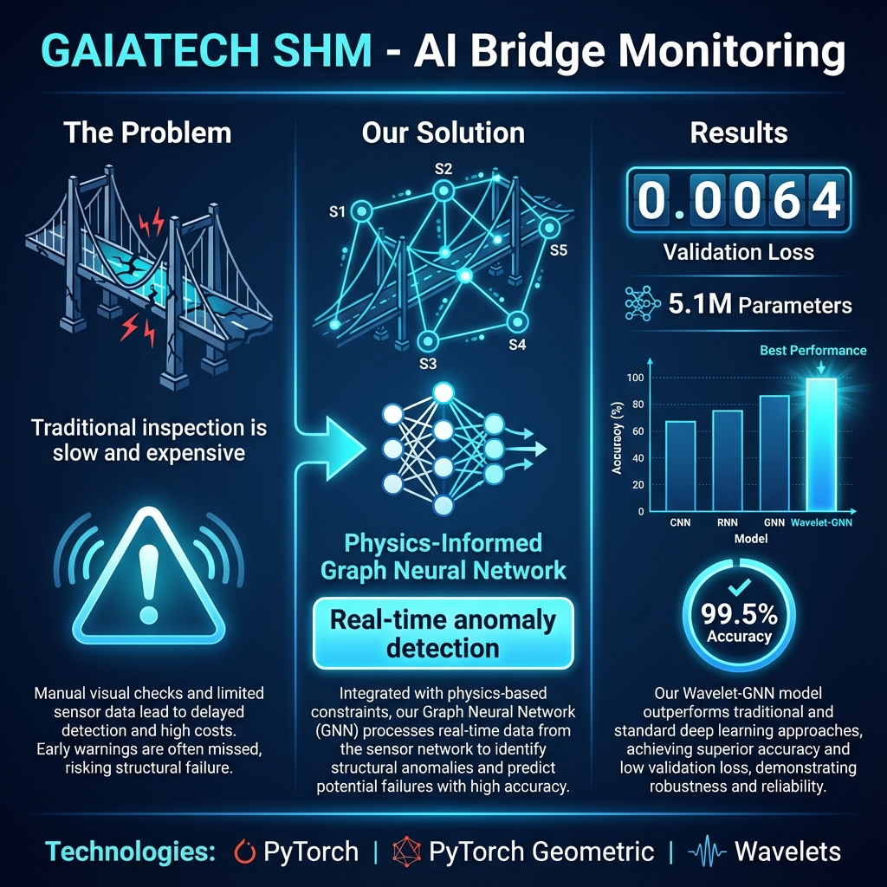
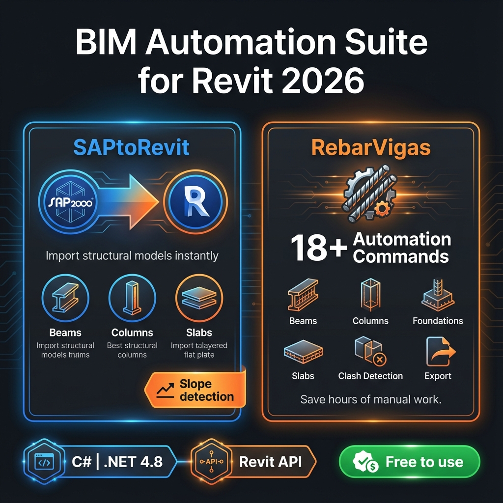

Sobre Mí
Egresado de Ingeniería Civil de la Universidad Peruana de Ciencias Aplicadas (UPC) con especialización en Inteligencia Artificial y desarrollo de software aplicado a la industria de la construcción.
Mi enfoque combina el conocimiento tradicional de ingeniería estructural con herramientas modernas de Machine Learning para optimizar procesos, mejorar la seguridad y automatizar flujos de trabajo BIM.
Machine Learning
PyTorch, TensorFlow, Scikit-learn
Computer Vision
YOLOv8, OpenCV
BIM Automation
Revit API (C#), Dynamo
Data Analysis
Power BI, Python, Excel VBA

Proyectos Destacados
🧠 GAIATECH SHM
Machine LearningSistema de Monitoreo de Salud Estructural basado en IA para detección de anomalías en puentes usando datos de acelerómetros y redes neuronales de grafos.
Innovación Técnica
- Arquitectura Spatio-Temporal Graph Autoencoder (STG-AE) con GRU y GCN
- Grafo físicamente informado basado en geometría 3D real del puente
- Features extraídas con Discrete Wavelet Transform (DWT)
- Entrenado con datos de 5 sensores de acelerometría
Arquitectura del Modelo

Spatio-Temporal Graph Autoencoder

Comparativa de 4 Modelos
Resumen del Proyecto

Sistema de Monitoreo Estructural con IA
👷 EMARC VISIÓN
Computer VisionSistema de visión por computadora para verificación automática del uso de Equipos de Protección Personal (EPP) en obras de construcción, cumpliendo la Norma G.050.
Clases Detectadas
Características del Sistema
- Aplicación de escritorio con interfaz profesional (Tkinter)
- Análisis en tiempo real de video, cámara o imágenes
- Historial de detecciones con exportación
- Arquitectura escalable con ESP32-CAM
📊 Evidencia Cuantitativa

Curva Precisión-Recall (mAP 90.4%)

Matriz de Confusión Normalizada
📈 Proceso de Aprendizaje

Curvas de Entrenamiento

Análisis del Dataset
🖥️ Validación Funcional

Interfaz del Sistema en Acción
🏗️ Resultados en Campo

Detección en grupo

Detección de ausencia de EPP

Detección en diferentes ángulos
🎥 Demostración en Video
Primera prueba de funcionamiento del sistema
🔐 Control de Acceso

Control de Acceso por Detección Facial
🔧 Suite de Automatización BIM
Revit APIColección de plugins para Autodesk Revit 2026 que automatizan tareas de diseño estructural, importación de modelos y gestión de proyectos BIM.
SAPtoRevit
Importador de modelos SAP2000/ETABS a Revit
- Vigas y columnas estructurales
- Losas con pendientes variables
- Mapeo automático de secciones
RebarVigas
Suite de automatización estructural
- Armado de vigas, columnas, zapatas
- Losas aligeradas y bidireccionales
- Detección de interferencias
- Importación CAD → Familias
Suite de Automatización

Plugins para Revit 2026
Experiencia
Asistente de Oficina Técnica
Obra: Teatro Municipal de Yunguyo, Puno
- Elaboración de informes mensuales de avance
- Valorizaciones y control de costos
- Modelado BIM estructural en Revit
Asistente de Oficina Técnica
Constructora Talgus S.A.C., Lima
- Metrados y análisis de costos
- Seguimiento de obra y valorizaciones
- Actualización de planos CAD y BIM
Director del Área de Investigaciones
Capítulo Estudiantil IDI - UPC
- Gestión de proyectos de investigación en IA
- Coordinación de equipos multidisciplinarios
Contacto
🏔️ Disponibilidad inmediata para régimen 14x7 en Unidad Minera